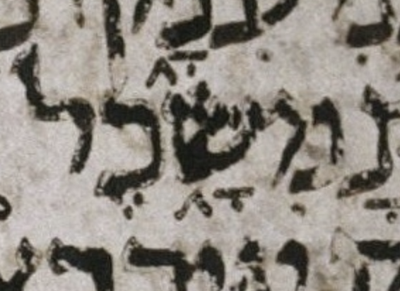
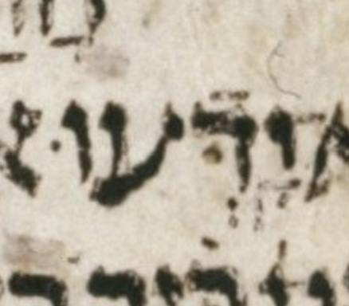
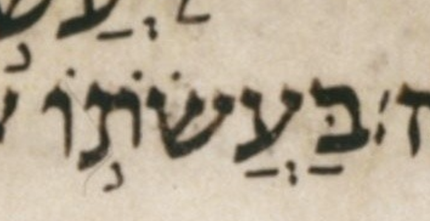
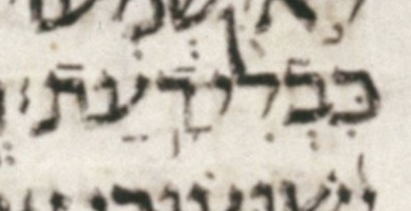
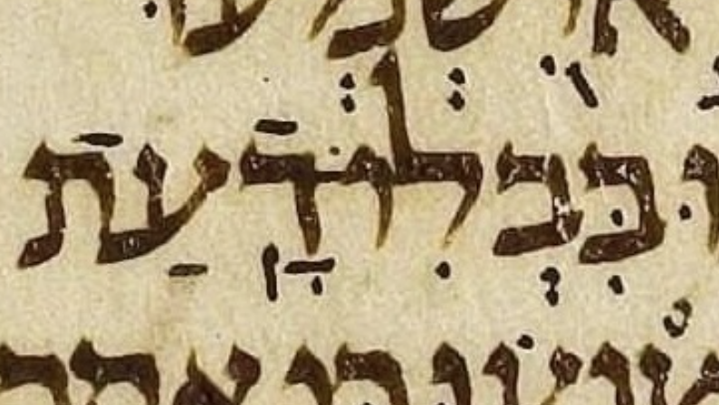
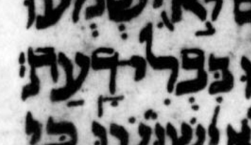
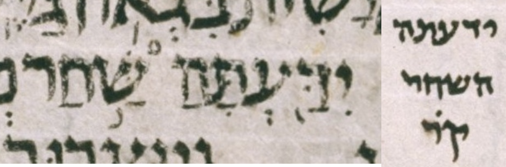
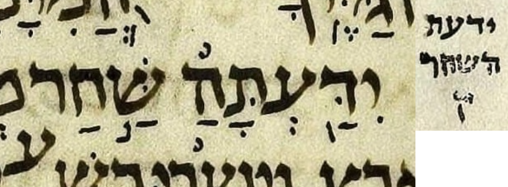

{kind=link}

This document presents some quirks in μL in the book of Job.
The header of each entry below takes the following form:
| μL-proposed consensus |
# c:v | how μL-proposed differs from consensus |
Where:
| שָׁ֔מָה שָׁ֔מָּה |
# 1:21 | מ lacks דגש |
BHQ notes this quirk. As usual, it does so by noting that μA and μY agree, and μL disagrees with them. I.e. μA=μY=x, μL=w, and w≠x. So what we boldly call the consensus, BHQ merely calls the matching contents of μA and μY. — U — M — μL 397B col. 1 line 1
| י֖וֹם י֭וֹם |
# 3:3 | טרחא not דחי |
BHQ is the source of this (flawed) transcription. — U — M — μL 397B col. 2 line 12

| א֚וֹ א֤וֹ |
# 3:16 | יתיב not מהפך |
יתיב doesn’t make sense here because this is in the poetic rather than prose section of Job (3:2 – 42:6). — BHQ is the source of this (flawed) transcription. I don’t think BHQ is really proposing that μL has יתיב here. This is more likely a typo (inherited from BHS) than a deliberate choice. — U — M — μL 398A col. 1 line 3

| כּ֖וֹשֵׁל כּ֭וֹשֵׁל |
# 4:4 | טרחא not דחי |
BHQ is the source of this (flawed) transcription. — U — M — μL 398A col. 1 line 20

| אֱל֣וֹהַ אֱל֣וֹהַּ |
# 4:9 | ה lacks מפיק |
This is one of seven similar cases in Job in μL. All are correctly transcribed in BHQ, i.e. transcribed without a מפיק. Although all are correctly transcribed in BHQ, they are noted to different extents in BHQ. Six of these seven, including this one, are noted in the entry for 4:9 in the BHQ section “Commentary on the Critical Apparatus.” Only this one and 11:6 are noted in the bottom-of-page critical apparatus as well. The one in 4:17 is not noted in any way in BHQ. — U — M — μL 398A col. 1 line -2 (2 counting from bottom of column)

| מֵאֱל֣וֹהַ מֵאֱל֣וֹהַּ |
# 4:17 | ה lacks מפיק |
This is one of seven similar cases in Job in μL. All are correctly transcribed in BHQ, i.e. transcribed without a מפיק. Although all are correctly transcribed in BHQ, they are noted to different extents in BHQ. This is the only one of these seven not noted in any way in BHQ. For more details, see my entry on 4:9. — U — M — μL 398A col. 2 line 10

| וְשֽׁוּבוּ וְשׁ֥וּבוּ |
# 6:29 | געיה not מרכא |
Contrary to the transcription shown above, the most likely scribal intent was מרכא. — BHQ is the source of this (flawed) transcription. — U — M — μL 399A col. 1 line 2

| וְכִימֵ֖֗י וְכִימֵ֖י |
# 7:1 | רביע fights טרחא |
BHQ silently ignores the possible רביע. — U — M — μL 399A col. 1 line 4

| יַעֲלֽ͏ֶה׃ יַעֲלֶֽה׃ |
# 7:9 | סילוק precedes סגול |
BHQ transcribes μL as shown above, but BHQ does not note that this transcription diverges from consensus. — U — M — μL 399A col. 1 line 14

| וְשִׁ֖חֲרְתַּ֣נִי וְשִׁ֖חַרְתַּ֣נִי |
# 7:21 | פתח on ח is חטף |
It doesn’t make sense to have a חטף vowel (aka a חטף שווא) followed by a simple שווא. Yet, the manuscript image clearly shows this. — BHQ transcribes μL as shown above, but BHQ does not note that this transcription diverges from consensus. — U — M — μL 399A col. 2 line 3

| וַיֹאמַֽר׃ וַיֹּאמַֽר׃ |
# 8:1 | yod (י) lacks דגש |
This quirk is noted in BHQ. — U — M — μL 399A col. 2 line 5 (including 1 blank line in the count)

| וְּ֝אַחֲרִיתְךָ֗ וְ֝אַחֲרִֽיתְךָ֗ |
# 8:7 | שורוק dot fights שווא |
The געיה difference is not important to us here. — BHQ silently ignores the possible שורוק dot. — U — M — μL 399A col. 2 line 13 (including 1 blank line in the count)

| ה֖וּא ה֭וּא |
# 8:16 | טרחא not דחי |
BHQ is the source of this (flawed) transcription. — U — M — μL 399A col. 2 line 24

| יֹ֭נַקְתּ֥וֹ יֹֽנַקְתּ֥וֹ |
# 8:16 | דחי not געיה |
Above I have asserted that the consensus has געיה here, but this געיה, like most cases of געיה, is optional. Therefore, one could just as easily assert the consensus has no געיה. I have chosen the consensus to be as close as possible to the proposed transcription of μL. I did this in order to make the proposed transcription seem no weirder than it really is. In other words, it is better to frame this as a question of דחי vs געיה than as a question of דחי vs no mark at all. — BHQ is the source of this (flawed) transcription. — U — M — μL 399A col. 2 line -4 (4 counting from bottom of column)
| יִתְפַלָּצֽוּן׃ יִתְפַּלָּצֽוּן׃ |
# 9:6 | פ lacks דגש |
There is a bump on the פ that might be a misplaced דגש. — BHQ transcribes μL as shown above, but BHQ does not note that this transcription diverges from consensus. — U — M — μL 399B col. 1 line 12 (including 1 blank line in the count)

| עִמּוֹ׃ (?) עִמּֽוֹ׃ |
# 9:14 | סילוק may be missing |
BHQ silently supplies the סילוק that is the consensus expectation, despite little or no evidence for it in μL. — U — M — μL 399B col. 1 line 22 (including 1 blank line in the count)

| כַּפָּי׃ (?) כַּפָּֽי׃ |
# 9:30 | סילוק may be missing |
BHQ silently supplies the סילוק that is the consensus expectation, despite little or no evidence for it in μL. — U — M — μL 399B col. 2 line 15

| אַֽ֭דַבְּרָה אֲֽ֭דַבְּרָה |
# 9:35 | פתח on א is not חטף |
BHQ transcribes μL as shown above, but BHQ does not note that this transcription diverges from consensus. — U — M — μL 399B col. 2 line -8 (8 counting from bottom of column)

| אֲ֝דַבְּרָה֗ אֲ֝דַבְּרָ֗ה |
# 10:1 | רביע is on ה not ר |
BHQ transcribes μL as shown above, but BHQ does not note that this transcription diverges from consensus. — U — M — μL 399B col. 2 line -6 (6 counting from bottom of column)

| עָנְיֽ͏ִי׃ עׇנְיִֽי׃ |
# 10:15 | סילוק precedes חיריק |
BHQ transcribes μL as shown above, but BHQ does not note that this transcription diverges from consensus. — U — M — μL 400A col. 1 line 14

| יַחֲרִ֑ישׁו יַחֲרִ֑ישׁוּ |
# 11:3 | שורוק dot is missing |
BHQ transcribes μL as shown above, but BHQ does not note that this transcription diverges from consensus. — U — M — μL 400A col. 1 line -1 (1 counting from bottom of column)

| אֱ֝ל֗וֹהַ אֱ֝ל֗וֹהַּ |
# 11:6 | ה lacks מפיק |
This is one of seven similar cases in Job in μL. All are correctly transcribed in BHQ, i.e. transcribed without a מפיק. Although all are correctly transcribed in BHQ, they are noted to different extents in BHQ. 4:9 discusses the matter at greater length. — U — M — μL 400A col. 2 line 5

| אֱל֣וֹהַ אֱל֣וֹהַּ |
# 11:7 | ה lacks מפיק |
This is one of seven similar cases in Job in μL. All are correctly transcribed in BHQ, i.e. transcribed without a מפיק. Although all are correctly transcribed in BHQ, they are noted to different extents in BHQ. 4:9 discusses the matter at greater length. — U — M — μL 400A col. 2 line 6

| אַ֭תָּ֗ה אַ֭תָּה |
# 11:13 | רביע on ת fights דחי |
BHQ transcribes μL as shown above, but BHQ does not note that this transcription diverges from consensus. — U — M — μL 400A col. 2 line 13

| וְאֶת וְאֶת־ |
# 12:3 | מקף is missing |
BHQ silently supplies the מקף that is the consensus expectation, despite no evidence for it in μL. — U — M — μL 400A col. 2 line -1 (1 counting from bottom of column)

| וְתֽוּשִׁיָּ֑ה (?) וְתוּשִׁיָּ֑ה |
# 12:16 | ת may have געיה |
There is a blob of ink below the ת. Most likely, this mark is a malformed masorah circle on the word מוליך on the line below. — BHQ seems to transcribe the blob of ink as both a געיה on ת and a masorah circle on מוליך. BHS did not have this געיה; I wish BHQ had left well enough alone. — U — M — μL 400B col. 1 line -11 (11 counting from bottom of column)

| מֵרֵ֣יַּח מֵרֵ֣יחַ |
# 14:9 | yod (י) has דגש |
BHQ silently ignores the possible דגש. — U — M — μL 401A col. 1 line -9 (9 counting from bottom of column)

| תָּ֤שִׁ֥ית (?) תָּ֤שִֽׁית |
# 14:13 | maybe מרכא not געיה |
WLC is the source of this (flawed) transcription. Note that the word in question has a rare and hard-to-understand phenomenon called “secondary מהפך” by Breuer. It may seem rather extraordinary that this געיה immediately follows the מהפך, but this is actually expected (or at least “allowed”) if the מהפך is secondary, as it is here.
The word תָּ֤שִֽׁית may be easier to understand if one considers it and לִ֖י (the next word) to form a compound word whose the מקף is, somewhat inexplicably, left implicit. If the מקף were made explicit, the compound would be written as תָּ֤שִֽׁית־לִ֖י and indeed that is the way that word is written (albeit with the מקף colored gray) in some editions of MAM (מקרא על פי המסורה). This and a handful of analogous cases are listed here, with the implicit מקף represented as a tilde (~).
See Breuer CoS sections 11.66.rn1 and 11.79. (CoS = The Cantillation of Scripture; rn = Roman numeral.) (Note that an English translation of CoS is now available, a great boon to students of cantillation who cannot easily read the original in its modern Hebrew.)
BHQ benefits from ignoring WLC here, though BHQ likely ignored WLC as a whole rather than considering and rejecting this particular change in WLC relative to BHS.
U — M — μL 401A col. 1 line -3 (3 counting from bottom of column)

| אֱל֣וֹהַ אֱל֣וֹהַּ |
# 15:8 | ה lacks מפיק |
This is one of seven similar cases in Job in μL. All are correctly transcribed in BHQ, i.e. transcribed without a מפיק. Although all are correctly transcribed in BHQ, they are noted to different extents in BHQ. 4:9 discusses the matter at greater length. — U — M — μL 401A col. 2 line -7 (7 counting from bottom of column)

| שֹֽׁ֥חַד׃ שֹֽׁחַד׃ |
# 15:34 | מרכא fights סילוק |
BHQ silently ignores the possible מרכא. — U — M — μL 401B col. 1 line -3 (3 counting from bottom of column)

| וְיָלֹ֣ד (?) וְיָ֣לֹד |
# 15:35 | מונח may be on ל not yod (י) |
There is little evidence of a מונח in any location on this word. There is a mark that looks like a פתח between the yod (י) and the ל, but that is grammatically implausible. — BHQ is the source of this (flawed) transcription. — U — M — μL 401B col. 1 line -3 (3 counting from bottom of column)

| ל֤וּ־ ל֤וּ |
# 16:4 | מקף is present |
Though it is not relevant to the point at hand, which is the presence of a מקף, note that in μL, the shape we take to be מחפך is touching the bottom of the ל (lamed). — Though it is not relevant to the point at hand, note that BHQ continues to fail to distinguish between גלגל and אתנח הפוך. — U — M — μL 401B col. 2 line 3

| מְרֵרָֽתִי׃ מְרֵרָתִֽי׃ |
# 16:13 | סילוק is on 2nd ר not ת |
BHQ transcribes μL as shown above, but BHQ does not note that this transcription diverges from consensus. — U — M — μL 401B col. 2 line -10 (10 counting from bottom of column)

| אֱ֝ל֗וֹהַ אֱ֝ל֗וֹהַּ |
# 16:20 | ה lacks מפיק |
This is one of seven similar cases in Job in μL. All are correctly transcribed in BHQ, i.e. transcribed without a מפיק. Although all are correctly transcribed in BHQ, they are noted to different extents in BHQ. 4:9 discusses the matter at greater length. — U — M — μL 401B col. 2 line -2 (2 counting from bottom of column)

| מִּשָּׂ֑כֶל (?) מִשָּׂ֑כֶל |
# 17:4 | מ may have דגש |
The color image of μL reveals this דגש to be unlikely. Surprisingly, BHL includes this דגש in its body text rather than noting it in BHL-A. — BHQ has no דגש here. I happen to think that this is the best transcription of μL here, but I don’t know whether BHQ arrived at this transcription on purpose or by accident. Did the editors of BHQ consider, but ultimately decide against, the faint possible דגש? Or did they simply ignore μL entirely, supplying the consensus pointing, which has no דגש? See my entry on נכר in 34:19 for further discusion. — U — M — μL 402A col. 1 line 5

| וְתֹ֖פֶתּ וְתֹ֖פֶת |
# 17:6 | final ת has דגש |
A דגש in a final ת doesn’t make sense without a קמץ or a שווא נח below. But the dot is convincing. — BHQ notes this, whereas this is not noted in the other editions under consideration. — U — M — μL 402A col. 1 line 7

| לְבָבִּֽי׃ לְבָבִֽי׃ |
# 17:11 | second ב has דגש |
BHQ notes this, whereas this is not noted in the other editions under consideration. — U — M — μL 402A col. 1 line 13

| הֲ֭לְמַּעַנְךָ הַֽ֭לְמַעַנְךָ |
# 18:4 | פתח on ה is חטף. |
BHQ: הַ֭לְמַּעַנְךָ
The quirk that מ has דגש is discussed in a separate entry of mine. The געיה difference is not important to us here. — BHQ silently ignores the possible שווא part of the possible חטף פתח. It also silently ignores the possible interpretation of that ink as a געיה. I.e. other than the prepositive דחי accent, BHQ supplies only the (full) פתח that is the consensus expectation here. BHQ does so silently, i.e. with no note about the pointing of ה. — U — M — μL 402A col. 1 line -4 (4 counting from bottom of column)

| הֲ֭לְמַּעַנְךָ הַֽ֭לְמַעַנְךָ |
# 18:4 | מ has דגש. |
BHQ: הַ֭לְמַּעַנְךָ
The quirk that the פתח on ה is חטף is discussed in a separate entry of mine. The געיה difference is not important to us here. — BHQ notes that the דגש on the מ in μL disagrees with μA and μY. BHQ misses the געיה in μA. This געיה is irrelevant to BHQ’s point here, which is about the דגש. Still, it would have been nice if BHQ had transcribed the געיה. — U — M — μL 402A col. 1 line -4 (4 counting from bottom of column)
μA (Aleppo):

| א֖וֹר א֭וֹר |
# 18:6 | טרחא not דחי |
The scribe of uL probably intended a דחי but placed it like a טרחא. — BHQ positions the mark ambiguously. The mark is a little to the right of center. So it is not centered, as one would expect a טרחא to be, but neither is it as far to the right as דחי normally is in BHQ. — U — M — μL 402A col. 1 line -2 (2 counting from bottom of column)

| בְּעָּקֵ֣ב (?) בְּעָקֵ֣ב |
# 18:9 | ע may have דגש |
A דגש in a ע doesn’t make sense. But the dot is convincing, despite being a little close to the right arm of the ע. — BHQ notes this possibility, whereas this is not noted in the other editions under consideration. It could be the editors of those other editions did not catch this, or it could be that they caught it but considered to be too slight a possibility to note it. — U — M — μL 402A col. 2 line 2

| חֶרְפָּתִּֽֿי (?) חֶרְפָּתִֽי׃ |
# 19:5 | דגש may fight with רפה |
A דגש on a letter with רפה doesn’t make sense. The color image of μL reveals this דגש to be unlikely. — BHQ drops the note that BHS has on this quirk, which is extraordinary. As usual, we don’t know whether BHQ dropped this note on purpose or by accident. BHQ silently lets the faint possible דגש “win” over the clear רפה in μL. In my opinion, BHQ should have transcribed either both marks (דגש and רפה) or neither. Thus I consider BHQ to have not accurately transcribed μL here. Also, BHQ should have had a note. — U — M — μL 402A col. 2 line -5 (5 counting from bottom of column)

| קָּ֭רָאתִי (?) קָ֭רָאתִי |
# 19:16 | ק may have דגש |
The dot is suspiciously brown rather than black. — BHQ notes that the דגש on the ק in μL disagrees with μA and μY. — U — M — μL 402B col. 1 line 8

| תֹ֖אמְרוּ תֹ֭אמְרוּ |
# 19:28 | טרחא not דחי |
BHQ is the source of this (flawed) transcription. — U — M — μL 402B col. 1 line 24

| בּ֖וֹ בּ֭וֹ |
# 20:23 | טרחא not דחי |
BHQ is the source of this (flawed) transcription. — U — M — μL 40XY col. 0 line 0

| וִלֹֽא־ וְלֹֽא־ |
# 21:25 | חיריק not שווא |
The dot is suspiciously brown rather than black, making me wonder whether the ו was pointed at all. — BHQ silently supplies the שווא that is the consensus expectation, despite little or no evidence for it in μL. — U — M — μL 403A col. 2 line 13

| רֹ֭אשׁ רֹ֖אשׁ |
# 22:12 | דחי not טרחא |
foo — BHQ is the source of this (flawed) transcription. — U — M — μL 403B col. 1 line 12

| ל֖וֹ ל֭וֹ |
# 22:14 | טרחא not דחי |
BHQ is the source of this (flawed) transcription. — U — M — μL 40XY col. 0 line 0

| עִמּ֑וֹ (?) עִמּ֣וֹ |
# 22:21 | אתנח not מונח |
A dot under the מ of עמו is fairly clear. It is (charitably) not transcribed by BHL-A, presumably based on the consensus expectation that it is absent. — BHQ fails to note that the אתנח it transcribes on עמו disagrees with μA and μY. — U — M — μL 403B col. 1 line -6 (6 counting from bottom of column)

μA (Aleppo):

μY (Cambridge 1753) (note that instead of a masorah circle, μY uses a pair of above-dots as a “callout” for a Masorah parva note; hence the pair of above-dots above ל in ושלם.):

| וּשְׁלם וּשְׁלָ֑ם |
# 22:21 | ל lacks קמץ־אתנח |
Perhaps some super-faint remains of an אתנח under ל can be seen. The top dot of the שווא (under the ש) is super-faint. See my entry for 22:21 עמי for μA and μY images. — BHQ (charitably) transcribes the top dot of the שווא using, as one often has to, faint evidence bolstered by consensus expectations. BHQ notes (as does BHS) that whereas the ל of ושלם is unpointed in μL, that ל has קמץ and אתנח in μA and μY. — U — M — μL 403B col. 1 line -6 (6 counting from bottom of column)
| א֖וֹמֶר אֹ֭מֶר |
# 22:28 | טרחא not דחי |
The scribe of uL probably intended a דחי but placed it like a טרחא.The מלא/חסר spelling difference is not important to us here.
BHQ places the mark a little left of center. Though this placement is odd, this makes it clear that a טרחא was intended by BHQ rather than a דחי. Thus BHQ somewhat-accurately transcribes the quirk in μL, but should have noted the quirk. Perhaps even better would have been to (charitably) transcribe this as a דחי, and note the quirk. But it is not the editorial policy of BHQ to make such notes: although BHQ is full of charitable transcriptions, as far as I know it never notes its charity.

| יֽ͏ְמַלֵּ֥ט (?) יְמַלֵּ֥ט |
# 22:30 | yod (י) may have געיה |
The possible געיה is before שווא. There is another mark below those marks. It is likely unintentional, and is treated accordingly, i.e. ignored, by all editions I know. — BHQ has the געיה but makes no note as to whether the געיה diverges from consensus. There is no consensus in many cases of געיה, since most cases of געיה are optional. געיה with שווא (whether before or after שווא) occurs often, but further research would be needed to say whether this is a case in which געיה with שווא would be expected (or at least an expected option). — U — M — μL 403B col. 2 line 4

| וְ֝נִּמְלַ֗ט (?) וְ֝נִמְלַ֗ט |
# 22:30 | נ may have דגש |
The dot in question is suspiciously smaller than nearby ones. — BHQ notes this possibility, whereas this is not noted in the other editions under consideration. It could be the editors of those other editions did not catch this, or it could be that they caught it but considered to be too slight a possibility to note it. — U — M — μL 403B col. 2 line 4

| כֹּ֖חַ כֹּ֭חַ |
# 23:6 | טרחא not דחי |
BHQ is the source of this (flawed) transcription. — U — M — μL 40XY col. 0 line 0

| יָ֥דְּֿעוּ (?) יָ֥דְעוּ |
# 24:16 | דגש may fight with רפה |
A דגש on a letter with רפה doesn’t make sense. The dot in question is suspiciously larger than nearby ones, and looks different from them in other ways. — BHQ notes this possibility, whereas this is not noted in the other editions under consideration. It could be the editors of those other editions did not catch this, or it could be that they caught it but considered to be too slight a possibility to note it. — U — M — μL 404A col. 1 line -12 (12 counting from bottom of column)

| רֹעֵ֣ה (?) רֹעֶ֣ה |
# 24:21 | maybe צירה not סגול |
Perhaps there is some super-faint evidence of a third dot that would make a סגול, but this could be just wishful thinking. Note that there is a third dot above the two clearer dots, but I take that to be part of the ע that did not flake off like its neighboring ink did. — BHQ silently supplies the סגול that is the consensus expectation. I.e. despite little or no evidence for it in μL, BHQ silently infers a third dot centered below the two clearer dots. — U — M — μL 404A col. 1 line -6 (6 counting from bottom of column)

| גְּ֝בוּרוֹתָ֗יו גְּ֝בוּרֹתָ֗יו |
# 26:14 | חולם becomes מלא in קרי |
The consensus is that חולם stays חסר in the קרי, i.e. – רתו in the כתיב merely expands to – רתיו in the קרי. In contrast to the consensus, in μL, – רתו in the כתיב expands all the way to – רותיב in the קרי. The marginal קרי note in μL is a little hard to parse until you realize that it is “invaded” from above by the descender of a big dotted ק.
BHS does not catch this quirk in μL: it reflects the consensus rather than μL. BHQ half-fixes the error in BHS: it updates its marginal קרי note to reflect μL rather than the consensus, but it does not correspondingly update its bottom-of-page critical apparatus note. This is similar to what happened with the μL קרי of ידעתה השחר in 38:12.
U — M — μL 404A col. 2 line -5 (5 counting from bottom of column)

μA (Aleppo):

| חַי חַי־ |
# 27:2 | מקף is missing |
Perhaps there was a מקף that was ignored during re-inking, leaving only is some super-faint evidence of this מקף. By the way, the evidence for the דחי on the א of the next word is super-faint. — BHQ silently supplies the מקף that is the consensus expectation, despite little or no evidence for it in μL. — U — M — μL 404A col. 2 line -2 (2 counting from bottom of column)

| הִדְריכֻ֥הוּ הִדְרִיכ֥וּהוּ |
# 28:8 | ר lacks חיריק |
The מלא/חסר spelling difference is not important to us here. — BHQ silently supplies the חיריק that is the consensus expectation, despite no evidence for it in μL. — U — M — μL 404B col. 2 line 5

| ה֖וּא ה֭וּא |
# 28:24 | טרחא not דחי |
BHQ is the source of this (flawed) transcription. — U — M — μL 40XY col. 0 line 0

| בַּעֲשׂת֣וֹ בַּעֲשֹׂת֣וֹ |
# 28:26 | ש lacks חולם dot |
Contrary to the transcription shown above, the image of μL clearly shows μL to have both a sin dot and a חולם dot. — BHQ is the source of this (flawed) transcription. I don’t think BHQ is really proposing that μL lacks this חולם dot. This is more likely a typo (inherited from BHS) than a deliberate choice. — U — M — μL 404B col. 2 line -1 (1 counting from bottom of column)

| וְעַ֥ין וְעַ֥יִן |
# 29:11 | yod (י) lacks חיריק |
BHQ silently supplies the חיריק that is the consensus expectation, despite no evidence for it in μL. — U — M — μL 405A col. 1 line -12 (12 counting from bottom of column)

| בִּקְצִירֽ͏ִי׃ בִּקְצִירִֽי׃ |
# 29:19 | סילוק precedes חיריק |
Probably the ascender of the ל on the line below “forced” the סילוק to be early. — BHQ transcribes μL as shown above, but BHQ does not note that this transcription diverges from consensus. — U — M — μL 405A col. 1 line -4 (4 counting from bottom of column)

| כֹּ֖חַ כֹּ֭חַ |
# 30:18 | טרחא not דחי |
BHQ is the source of this (flawed) transcription. — U — M — μL 40XY col. 0 line 0

| ר֖וּחַ ר֭וּחַ |
# 30:22 | טרחא not דחי |
BHQ is the source of this (flawed) transcription. — U — M — μL 40XY col. 0 line 0

| ע֖וֹרִי ע֭וֹרִי |
# 30:30 | טרחא not דחי |
BHQ is the source of this (flawed) transcription. — U — M — μL 40XY col. 0 line 0

| ה֖וּא ה֭וּא |
# 31:4 | טרחא not דחי |
BHQ is the source of this (flawed) transcription. — U — M — μL 40XY col. 0 line 0

| רַגְלֽ͏ִי׃ רַגְלִֽי׃ |
# 31:5 | סילוק precedes חיריק |
BHQ silently supplies the marks in the vowel-then-accent order that is the consensus expectation, in clear contradiction of μL here. 32:6 is similar. In my opinion BHQ shows itself to be out of date by continuing to aspire, as BHS did, to reflect all such ordering quirks. I think the modern consensus is that these orderings are as meaningless as the variable length of ascenders on ל. Nonetheless, since BHQ still aspires to get these orderings right, it is fair for me to point out when it fails to do so. — U — M — μL 405B col. 1 line -9 (9 counting from bottom of column) (including 1 blank line in the count)

| מֻאֿוּֽם׃ מֽאֿוּם׃ |
# 31:7 | קבוץ and סילוק not סילוק and ∅ |
BHQ: מֻאֽוּם׃
BHQ reflects neither μL nor the consensus expectation here. It reflects μL except it places the סילוק under the א. This not only contradicts μL, but also makes no sense given the רפה on the א. One might argue that this רפה should have been shown, despite the general policy of BHQ to ignore רפה marks in μL. Regardless of whether the רפה should have been shown, its presence in μL should have excluded the possibility of a סילוק under its letter (א)! BHQ notes that here μL disagrees with μA and μY. But BHQ gives the מ in μA and μY a מרכא rather than a סילוק, which seems more likely a typo than a deliberate choice.
U — M — μL 405B col. 1 line -6 (6 counting from bottom of column) (including 1 blank line in the count)

| א֖וֹבֵד א֭וֹבֵד |
# 31:19 | טרחא not דחי |
BHQ is the source of this (flawed) transcription. — U — M — μL 40XY col. 0 line 0

| ה֖וּא ה֭וּא |
# 31:28 | טרחא not דחי |
BHQ is the source of this (flawed) transcription. — U — M — μL 40XY col. 0 line 0

| עֲוֺֽנִי׃ עֲוֺנִֽי׃ |
# 31:33 | סילוק is on ו not נ |
BHQ transcribes μL as shown above, but BHQ does not note that this transcription diverges from consensus. — U — M — μL 405B col. 2 line -3 (3 counting from bottom of column)

| כֹּ֖חָהּ כֹּ֭חָהּ |
# 31:39 | טרחא not דחי |
BHQ is the source of this (flawed) transcription. — U — M — μL 40XY col. 0 line 0

| יְשִׁישִׁ֑ים יְשִׁישִׁ֑ים |
# 32:6 | אתנח precedes חיריק |
BHQ silently supplies the marks in the vowel-then-accent order that is the consensus expectation, in clear contradiction of μL here.31:5 is similar and discusses the matter at greater length. — U — M — μL 406A col. 1 line -6 (6 counting from bottom of column)

| אֱ֝ל֗וֹהַ אֱ֝ל֗וֹהַּ |
# 33:12 | ה lacks מפיק |
This is one of seven similar cases in Job in μL. All are correctly transcribed in BHQ, i.e. transcribed without a מפיק. Although all are correctly transcribed in BHQ, they are noted to different extents in BHQ. 4:9 discusses the matter at greater length. — U — M — μL 406B col. 1 line 2

| הַֽחַיִּים׃ הַחַיִּֽים׃ |
# 33:30 | סילוק is on syl. 1 not 3 |
BHQ notes that here μL disagrees with μA and μY, which have the consensus pointing. — U — M — μL 406B col. 1 line -1 (1 counting from bottom of column)

| אַֽנֲשֵׁ֥י אַ֥נֲשֵׁ֥י |
# 34:10 | געיה not מרכא (on א) |
foo — BHQ is the source of this (flawed) transcription. — U — M — μL 406B col. 2 line 14

| נִּכַּר־ נִכַּר־ |
# 34:19 | נ has דגש |
The possible דגש is faint. The adjacent דגש (on כ) and other nearby marks are quite clear, casting suspicion on the legitimacy of this דגש.
BHQ has no דגש here. I happen to think that this is the best transcription of μL here, but I don’t know whether BHQ arrived at this transcription on purpose or by accident. Did the editors of BHQ consider, but ultimately decide against, the faint possible דגש? Or did they simply ignore μL entirely, supplying the consensus pointing, which has no דגש? Since BHQ does not note any uncertainty in its transcription here, it is hard to distinguish whether BHQ has ignored the mark in question on purpose or by accident. More broadly, BHQ Job never notes any uncertainty in its transcription of μL. This may mislead many readers. Despite the fact that high-resolution, color images of μL are now widely available, many readers will not engage with those images enough to understand how often there is great uncertainty in transcribing μL. And, even if the reader understands that such uncertainty exists in general, BHQ should, in my opinion, indicate to the reader the specific places where its transcription is particularly uncertain.
U — M — μL 406B col. 2 line -2 (2 counting from bottom of column)

| שׁ֖וֹעַ שׁ֭וֹעַ |
# 34:19 | טרחא not דחי |
BHQ is the source of this (flawed) transcription. — U — M — μL 40XY col. 0 line 0
| חֹ֖שֶׁךְ חֹ֭שֶׁךְ |
# 34:22 | טרחא not דחי |
BHQ is the source of this (flawed) transcription. — U — M — μL 40XY col. 0 line 0

| תֹ֖אמַר תֹ֭אמַר |
# 35:14 | טרחא not דחי |
BHQ is the source of this (flawed) transcription. — U — M — μL 40XY col. 0 line 0

| כִּבְלִי־ בִּבְלִי־ |
# 36:12 | כ not ב |
Although my focus is pointing rather than spelling, I am interested in a spelling difference like this, since it is not just a חסר vs מלא difference.
Here BHQ has a typo: it has בִּבְלִ־ rather than בִּבְלִי־ in the word it reports for μA and μY. I.e. it is missing a final yod (י) before the מקף. The same typo appears in the BHQ section “Commentary on the Critical Apparatus.” In addition to the typo, for some reason BHQ reports this word as being the קרי of μY, i.e. MY(qere) rather than just MY. I see no “Masora dot pair” (μY’s equivalent of a masorah circle) on this word in μY. Nor do I see any קרי note in the margin.

μA (Aleppo):

μY (Cambridge 1753):

| שׁ֖וּעֲךָ שׁ֭וּעֲךָ |
# 36:19 | טרחא not דחי |
BHQ is the source of this (flawed) transcription. — U — M — μL 40XY col. 0 line 0

| סֻכָּֽתֽוֹ׃ סֻכָּתֽוֹ׃ |
# 36:29 | כ has געיה |
The color image strongly suggests that the mark in question is not ink. A געיה right next to סילוק like that would be extraordinary, by the way, though no appeal to expectations is needed to dismiss this possible געיה. — BHQ has no געיה here. I happen to think that this is the best transcription of μL here, but I don’t know whether BHQ arrived at this transcription on purpose or by accident. Did the editors of BHQ consider, but ultimately decide against, the faint possible large געיה? Or did they simply ignore μL entirely, supplying the consensus pointing, which has no געיה? See my entry on נכר in 34:19 for further discusion. — U — M — μL 407B col. 1 line -5 (5 counting from bottom of column)

| לַשֶּׁ֨לַג׀ לַשֶּׁ֨לֶג׀ |
# 37:6 | 2nd ל has פתח not סגול |
BHQ transcribes μL as shown above, but BHQ does not note that this transcription diverges from consensus. — U — M — μL 407B col. 2 line 7

| ה֖וֹדִיעֵנוּ ה֭וֹדִיעֵנוּ |
# 37:19 | טרחא not דחי |
BHQ is the source of this (flawed) transcription. — U — M — μL 40XY col. 0 line 0

| ל֖וֹ ל֭וֹ |
# 37:20 | טרחא not דחי |
BHQ is the source of this (flawed) transcription. — U — M — μL 40XY col. 0 line 0

| הְֽ֭מִיָּמֶיךָ הֲֽ֭מִיָּמֶיךָ |
# 38:12 | simple שווא not חטף פתח |
39:20 is similar — BHQ notes that here μL disagrees with μA and μY, which have the consensus pointing. — U — M — μL 408A col. 1 line -12 (12 counting from bottom of column)

| יִדַּ֖עְתָּה הַשַּׁ֣חַר יִדַּ֖עְתָּ הַשַּׁ֣חַר |
# 38:12 | ה copied not moved in קרי |
The consensus is that this is one of those כתיב/קרי cases where the word boundary shifts from being after a ה to before that ה. I.e. ידעתה שחר becomes ידעת השחר. I.e. the ה that is at the end of the first word in the כתיב moves to the start of the second word in the קרי. Similar cases include 2 Samuel 5:2 (the כתיב is הייתה מוציא) and Ezekiel 42:9 (the כתיב is ומתחתה לשכות). In contrast to the consensus, in going from כתיב to קרי, μL can be though of as having copied the ה to the second word rather than moving it.
BHS does not catch this quirk in μL: it reflects the consensus rather than μL. BHQ half-fixes the error in BHS: it updates its marginal קרי note to reflect μL rather than the consensus, but it does not correspondingly update its bottom-of-page critical apparatus note. This is similar to what happened with 26:14.
U — M — μL 408A col. 1 line -11 (11 counting from bottom of column)

μA (Aleppo):

| צַלְמָּ֣וֶת צַלְמָ֣וֶת |
# 38:17 | מ has דגש |
BHQ notes this, whereas this is not noted in the other editions under consideration. — U — M — μL 408A col. 1 line -5 (5 counting from bottom of column)

| שֹׁ֖אָה שֹׁ֭אָה |
# 38:27 | טרחא not דחי |
BHQ is the source of this (flawed) transcription. — U — M — μL 40XY col. 0 line 0

| וְ֝יָדַעְתָּ֜ וְ֝יָדַעְתָּ֗ |
# 39:2 | גרש not רביע |
The mark in question is very heavy, having a stroke width more typical of a letter-stroke than of a niqqud-stroke. Its clarity suggests it is part of the re-inking. Indeed perhaps it is only part of the re-inking, i.e. perhaps it reflects no mark (or only a much smaller mark) in the original. The mark in question may be two marks, a רביע (expected) overlaid with a גרש (unexpected). Or, it may be only a single mark whose lower end is, for some reason, a blob. — BHQ silently supplies the רביע that is the consensus expectation. — U — M — μL 408A col. 2 line -3 (3 counting from bottom of column)

| מְלֵֽחָה׃ מְלֵחָֽה׃ |
# 39:6 | סילוק is on ל not ח |
BHQ transcribes μL as shown above, but BHQ does not note that this transcription diverges from consensus. — U — M — μL 408B col. 1 line 3

| בּ֖וֹ בּ֭וֹ |
# 39:11 | טרחא not דחי |
BHQ is the source of this (flawed) transcription. — U — M — μL 40XY col. 0 line 0

| בּ֖וֹ בּ֭וֹ |
# 39:12 | טרחא not דחי |
BHQ is the source of this (flawed) transcription. — U — M — μL 40XY col. 0 line 0

| אֶ֝בְרָה (?) אֶ֝בְרָ֗ה |
# 39:13 | רביע מגרש may lack רביע |
A more charitable interpretation of the image is that the רביע is present but is merged with the masorah circle. (It is fairly clear that a masorah circle is present.) Note that the vertical line above the ר is a סילוק from the line above. — BHQ seems to split the mark(s) in question into a רביע on ר and a masorah circle on ב. This is a reasonable (though somewhat charitable) interpretation of μL, but as is so often the case, BHQ should have noted this quirk. — U — M — μL 408B col. 1 line 11

| הְֽ֭תַרְעִישֶׁנּוּ הֲֽ֭תַרְעִישֶׁנּוּ |
# 39:20 | simple שווא not חטף פתח |
The situation with המימיך in 38:12 is similar. — BHQ transcribes μL as shown above, but BHQ does not note that this transcription diverges from consensus. — U — M — μL 408B col. 1 line -10 (10 counting from bottom of column)

| גָֽא֣וֹן (?) גָא֣וֹן |
# 40:10 | געיה may be present (on ג) |
The mark in question could easily be accidental. — BHQ transcribes μL as shown above, but BHQ does not note that this transcription diverges from consensus. — U — M — μL 408B col. 2 line -11 (11 counting from bottom of column)

| ה֖וּא ה֭וּא |
# 40:19 | טרחא not דחי |
BHQ is the source of this (flawed) transcription. — U — M — μL 40XY col. 0 line 0

| לֶֽחֱיוֹ׃ לֶחֱיֽוֹ׃ |
# 40:26 | סילוק on ל not yod (י) |
BHQ transcribes μL as shown above, but BHQ does not note that this transcription diverges from consensus. — U — M — μL 409A col. 1 line 8

| בּ֖וֹ בּ֭וֹ |
# 40:29 | טרחא not דחי |
BHQ is the source of this (flawed) transcription. — U — M — μL 40XY col. 0 line 0

| לִבְלִי־חָת׃ לִבְלִי־חָֽת׃ |
# 41:25 | סילוק missing |
BHQ silently supplies the סילוק that is the consensus expectation, despite no evidence for it in μL. — U — M — μL 409A col. 2 line 14

| בָנֽוֹת׃ בָּנֽוֹת׃ |
# 42:13 | ב lacks דגש |
BHQ notes this, whereas this is not noted in the other editions under consideration. — U — M — μL 409B col. 1 line -9 (9 counting from bottom of column) (including 1 blank line in the count)

{kind=link}
{kind=link}
{kind=link}
{kind=link}
{kind=link}
{kind=link}
{kind=link}
{kind=link}
{kind=link}
{kind=link}
{kind=link}
{kind=link}
{kind=link}
{kind=link}
{kind=link}
{kind=link}
{kind=link}
{kind=link}
{kind=link}
{kind=link}
{kind=link}
{kind=link}
{kind=link}